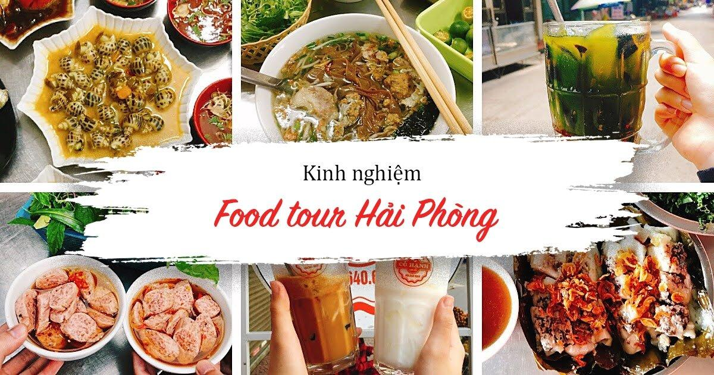

Foodtour theo khẩu vị của một người Hải Phòng
Trải nghiệm
Foodtour theo khẩu vị
của một người Hải Phòng
Dạo này thấy các bạn Hà
Nội & các tỉnh khác về Hải Phòng foodtour đông
vui quá, cảm thấy rất tự hào & mong mọi
người ưu ái Hải Phòng của chúng mình hơn
nữa
Tuy nhiên mình thấy nhiều bạn
chưa đi chuẩn những địa điểm ngon
thực sự, đa số nghe review, tiện
đường, thấy quán đông thì vào. Vì thế mình
mạn phép mời các bạn tham khảo 1 số
điểm theo mình khẩu vị 1 người Hải
Phòng là ổn
Kinh nghiệm là đi tới
mỗi điểm chỉ nên lựa chọn 1-2 món
đặc sắc của điểm đó để
thẩm, ví dụ như chợ này có món gì ngon thì mình thử
xong sang chợ khác, chứ nhiều khi các bạn
đến chợ ăn hết các hàng quán trong đó có
cả những quán không ngon, vừa bị no, mà ko chuẩn
Mình sẽ review theo tuyến
đường để các bạn dễ hình dung, review
những món ngon ở những điểm đó, còn các quán
mình ko nhắc đến theo mình là ko ngon hoặc mình
chưa có dịp thử (địa chỉ cụ thể
mình sẽ update dần vì nhiều khi cứ đi ăn ko
nhớ số)
1 - Đi thẳng từ ga Hải
Phòng qua ngã 4 là đường 2 Bà Trưng, ở đây có
bánh đúc Tàu cô Chuyên ngon & rẻ, cùng phía với hàng chè,
chứ ko phải hàng đối diện bên
đường bán sáng & chiều, còn hàng chè mình ko ưng
vì theo khẩu vị của m là ko ngon & bị cho
đường hoá học ngọt lợ.
Buổi chiều có quán bún ngâm
sợi to đúng kiểu Hp số 160 thì phải, bún cá , bún
sườn ... đều ngon
Ở đường này còn có quán
chim quay mắc mật địa chỉ 49 HBT ăn tại
chỗ cũng rất ngon
Vào buổi tối có quán mì pate ông bà
cụ số 244 , nhưng đông hay phải chờ
đợi nên mình hay ăn ở quán trên đó 1 đoạn
đối diện chợ Hàng Gà , quán này bmi ngon ko kém mà
sữa đậu nành ngon đặc hơn
2 - đường Cầu
Đất có quán chè cô Út khá ngon & rẻ tuy ko phải sx
nhất nhưng đáng để thử nên ăn mấy
loại chè nấu , còn chè đóng hộp là đi lấy
cất lại m thấy ko ngon
Ở gầm Cầu Đất có
bánh đa bún ngan , có ngan trộn ngon ( bán tối )
đi tiếp vào chợ cố
Đạo ( chợ ko họp tối ) buổi trưa có bún
chả Nem cua bể Nga, đối diện có quán bún tôm
ăn khá ổn , buổi chiều có nộm chân gà ngon, bánh
gối , bánh tôm, bột lọc cũng 8 điểm .
Tầm chiều tối ở đầu chợ có chị
bánh đa cua ăn khá ngon
3 - chợ An Dương : có quán bánh
đúc mắm tôm & nộm rau ngon , đối diện là
quán giá bể mình đánh giá ngon hơn chợ Cát Bi & các
nơi khác , ngoài ra quán còn có bì bò , gỏi giá bể &
sứa đỏ chấm bỗng khá ngon, bánh gối to
đầy đặn
4 - Chợ Cát Bi tuy đông đúc
& nhiều món làm các bạn choáng ngợp nhưng mình
lại ko hợp khẩu vị ở đây , sau khi
thẩm mình chỉ thấy được bì bò & chè Trang
so với mặt bằng chợ Cát Bi , còn so vs các
địa điểm khác thì ko có j đặc sắc
5 - Chợ Cột Đèn : pate
tiệm Phương Linh 29 chùa Hàng , từ ngã 4 đi vào 1
đoạn chứ ko phải mấy hàng đầu
đường , pate siêu ngon , thơm mình ưng nhất ,
các b có thể mua bánh mì que ở chỗ khác sau đó mua pate
, về ăn đến đâu thì phết đến
đấy nướng lại . buổi chiều có quán cháo
khoái cháo sườn siêu nhiều sườn các b tự
hỏi địa chỉ vì từ ngày quán chuyển vào trong
ngõ mình cũng ko ăn vì ngại đi
6 - chợ Lương Văn Can :
Bánh bèo , nộm bò khô khá ngon , xôi đỗ đen
đầu chợ thì siêu đỉnhhh
7 - chợ Đổ : có nhiều
quán nem Thính rất ngon , nem chua bà cụ ngày xưa mình
nghiện vì cụ có giấm hoá quả ngon tự ủ ,
nhưng bây h lượng khách đông giấm ủ ko
kịp hay sao đó bị ngọt ko có vị chua , nếu
mua về các b chế thêm giấm hoặc vắt chanh
sẽ vừa miệng hơn , đi thẳng lên ngã 4
Phạm Hồng Thái có quán nộm bò khô , chim quay bà Thành bây h
con gái bà bán là quán iu thích chuyên đóng họ của mình
8 - chợ Lam Sơn : nem tai nem Thính
chị Phượng ( 111 Lam Sơn ) cafe cốt dừa cô
Hằng, cô Hạnh, đặc biệt ở đây có quán
bánh đúc Tàu siêu ngon đối diện trường
mầm non Hướng Dương, mình đánh giá ngon
hơn cô Chuyên , bánh mềm, nước giấm vừa, có
cả hành phi rất thơm
9 - Ngoài ra các b muốn mua bánh mỳ
que về làm quà thì mua ở 181 Hàng Kênh (ngã 3 Khánh Nạp )
mình thấy ngon & mua làm quà ai cũng khen, hơn hẳn Lê
Lợi, ĐTH
- Bánh đa cua buổi tối ở
tô Hiệu đối diện ngõ Lâm Tường , bánh đa
cua buổi sáng cô Hồng hoặc cô Cẩm ngõ 173 Hàng Kênh bán
đến trưa, bún cá sáng ngã 4 Cát Dài - Cát Cụt

- Ốc Thương 269 Lê Lợi
ngon , phục vụ nhanh thích hợp với các bạn
đi food tour hoặc ốc Thuỷ Dương , thực
ra HP khá nhiều quán ốc ngon nhưng chỗ ngồi
chật , hoặc pvu chậm chỉ phù hợp với dân
địa phương nên m ko review
- Chân gà nướng , cật
nướng , cánh gà nướng đúng quán đầu ngã 3
Cát Cụt - Nguyến Đức Cảnh ko phải 3 hàng
liền nhau ở đường NĐC , chân cánh ở
đây ko tẩm ướp quá nhiều gia vị mà ngon
mộc kiểu thịt tươi
- buổi tối qua ngã 4 Trạng
Trình ăn miến trộn thập cẩm Phương béo
siêu đỉnh , đầy đặn có 30 k/bát
- bún tôm trong ngõ trường Võ
Thị Sáu ( đường Trần Ng Hãn ) bún tôm sợi to
, đậm đà bán từ 1-9 h tối
- bánh đa xào giòn đầu
đường Đền Nghè ( bán tối đêm )
- Trà cúc hạt dẻ ( mùa này
hết hạt dẻ cắn tạm hạt hướng
dương vậy  )
cô Lý Lán Bè hoặc diamond Minh Khai
)
cô Lý Lán Bè hoặc diamond Minh Khai
- bún chả thịt nướng -
chả nem cua bể đầu ngõ Chè Hương ( Lạch
Tray ) siêu ngon 30 k/ suất bán buổi trưa
- cháo lòng chân cầu vượt
Lạch Tray sạch sẽ, ngon
- bún cá , tôm, bề bề
đậm đà ngon bán sáng , ngõ 74 Mê Linh
Ôi còn nhiều lắm ko biết
viết đến bao h , bạn nào cần hỏi về
món j cứ hỏi mình sẽ chỉ nhiệt tình , HP m
hiếu khách lắm , camxamita !!!!!